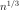
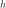
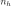
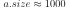
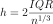
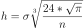
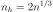
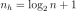
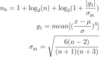
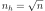

numpy.histogram_bin_edges¶
-
numpy.histogram_bin_edges(a, bins=10, range=None, weights=None)[source]¶ Function to calculate only the edges of the bins used by the
histogramfunction.- Parameters
- aarray_like
Input data. The histogram is computed over the flattened array.
- binsint or sequence of scalars or str, optional
If bins is an int, it defines the number of equal-width bins in the given range (10, by default). If bins is a sequence, it defines the bin edges, including the rightmost edge, allowing for non-uniform bin widths.
If bins is a string from the list below,
histogram_bin_edgeswill use the method chosen to calculate the optimal bin width and consequently the number of bins (see Notes for more detail on the estimators) from the data that falls within the requested range. While the bin width will be optimal for the actual data in the range, the number of bins will be computed to fill the entire range, including the empty portions. For visualisation, using the ‘auto’ option is suggested. Weighted data is not supported for automated bin size selection.- ‘auto’
Maximum of the ‘sturges’ and ‘fd’ estimators. Provides good all around performance.
- ‘fd’ (Freedman Diaconis Estimator)
Robust (resilient to outliers) estimator that takes into account data variability and data size.
- ‘doane’
An improved version of Sturges’ estimator that works better with non-normal datasets.
- ‘scott’
Less robust estimator that that takes into account data variability and data size.
- ‘stone’
Estimator based on leave-one-out cross-validation estimate of the integrated squared error. Can be regarded as a generalization of Scott’s rule.
- ‘rice’
Estimator does not take variability into account, only data size. Commonly overestimates number of bins required.
- ‘sturges’
R’s default method, only accounts for data size. Only optimal for gaussian data and underestimates number of bins for large non-gaussian datasets.
- ‘sqrt’
Square root (of data size) estimator, used by Excel and other programs for its speed and simplicity.
- range(float, float), optional
The lower and upper range of the bins. If not provided, range is simply
(a.min(), a.max()). Values outside the range are ignored. The first element of the range must be less than or equal to the second. range affects the automatic bin computation as well. While bin width is computed to be optimal based on the actual data within range, the bin count will fill the entire range including portions containing no data.- weightsarray_like, optional
An array of weights, of the same shape as a. Each value in a only contributes its associated weight towards the bin count (instead of 1). This is currently not used by any of the bin estimators, but may be in the future.
- Returns
- bin_edgesarray of dtype float
The edges to pass into
histogram
See also
Notes
The methods to estimate the optimal number of bins are well founded in literature, and are inspired by the choices R provides for histogram visualisation. Note that having the number of bins proportional to  is asymptotically optimal, which is why it appears in most estimators. These are simply plug-in methods that give good starting points for number of bins. In the equations below,  is the binwidth and  is the number of bins. All estimators that compute bin counts are recast to bin width using the
ptpof the data. The final bin count is obtained fromnp.round(np.ceil(range / h)).- ‘auto’ (maximum of the ‘sturges’ and ‘fd’ estimators)
A compromise to get a good value. For small datasets the Sturges value will usually be chosen, while larger datasets will usually default to FD. Avoids the overly conservative behaviour of FD and Sturges for small and large datasets respectively. Switchover point is usually .
- ‘fd’ (Freedman Diaconis Estimator)

The binwidth is proportional to the interquartile range (IQR) and inversely proportional to cube root of a.size. Can be too conservative for small datasets, but is quite good for large datasets. The IQR is very robust to outliers.
- ‘scott’

The binwidth is proportional to the standard deviation of the data and inversely proportional to cube root of
x.size. Can be too conservative for small datasets, but is quite good for large datasets. The standard deviation is not very robust to outliers. Values are very similar to the Freedman-Diaconis estimator in the absence of outliers.- ‘rice’

The number of bins is only proportional to cube root of
a.size. It tends to overestimate the number of bins and it does not take into account data variability.- ‘sturges’

The number of bins is the base 2 log of
a.size. This estimator assumes normality of data and is too conservative for larger, non-normal datasets. This is the default method in R’shistmethod.- ‘doane’

An improved version of Sturges’ formula that produces better estimates for non-normal datasets. This estimator attempts to account for the skew of the data.
- ‘sqrt’

The simplest and fastest estimator. Only takes into account the data size.
Examples
>>> arr = np.array([0, 0, 0, 1, 2, 3, 3, 4, 5]) >>> np.histogram_bin_edges(arr, bins='auto', range=(0, 1)) array([0. , 0.25, 0.5 , 0.75, 1. ]) >>> np.histogram_bin_edges(arr, bins=2) array([0. , 2.5, 5. ])
For consistency with histogram, an array of pre-computed bins is passed through unmodified:
>>> np.histogram_bin_edges(arr, [1, 2]) array([1, 2])
This function allows one set of bins to be computed, and reused across multiple histograms:
>>> shared_bins = np.histogram_bin_edges(arr, bins='auto') >>> shared_bins array([0., 1., 2., 3., 4., 5.])
>>> group_id = np.array([0, 1, 1, 0, 1, 1, 0, 1, 1]) >>> hist_0, _ = np.histogram(arr[group_id == 0], bins=shared_bins) >>> hist_1, _ = np.histogram(arr[group_id == 1], bins=shared_bins)
>>> hist_0; hist_1 array([1, 1, 0, 1, 0]) array([2, 0, 1, 1, 2])
Which gives more easily comparable results than using separate bins for each histogram:
>>> hist_0, bins_0 = np.histogram(arr[group_id == 0], bins='auto') >>> hist_1, bins_1 = np.histogram(arr[group_id == 1], bins='auto') >>> hist_0; hist_1 array([1, 1, 1]) array([2, 1, 1, 2]) >>> bins_0; bins_1 array([0., 1., 2., 3.]) array([0. , 1.25, 2.5 , 3.75, 5. ])